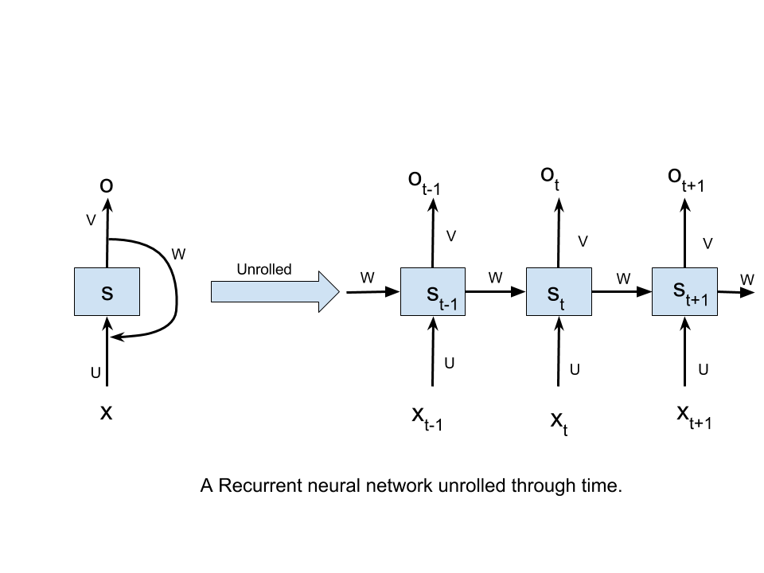
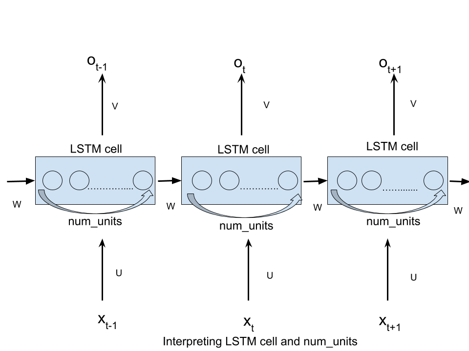
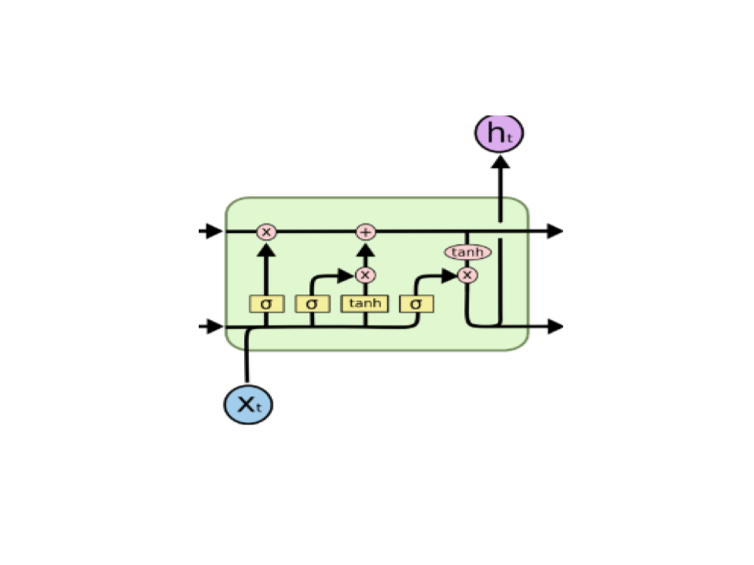

LSTM（长短期记忆）是最常用的 RNN （递归神经网络了）。经常用于序列数据。关于它的详细介绍可以看这个 权威博客。本文章原文位于：这里
MNIST 数据集
MNIST 是一个手写数字识别的数据集。可以用代码来下载使用：
from tensorflow.examples.tutorials.mnist import input_data |
数据分割为三个部分：
- mnist.train 55000 个图片数据
- mnist.test 10000 的测试图片数据。
- mnist.validation 5000 个有效的图片数据。
数据形状
让我们讨论关于MNIST数据集的训练数据的形状。所有三个部分数据的形状是相同的。
训练数据，55000 张图片，每张图片 28 X 28 pixels。这 784 个像素点放在一个维度是 784 的向量中。所以呢，训练数据的形状就是 (55000,784)，可通过 mnist.train.images 进行引用。
55000 个训练图片中，每个都有一个对应的标签，表示了图片所数的类（是哪个数字）。这里有 10 个（ 0,1,2….）。类标签以一种热编码形式表示。
标签在 numpy 数组中的形式为 (55000,10)，通过 mnist.train.lables。
实现
写代码前先画出一个概要，这有助于我们的代码更直观。
vanilla RNN
把一个 RNN 进行展开的话，就是如下这样：

在这里：
- 引用在 t 时刻的输入。
- 引用在 t 时刻的隐藏状态。可以把它想象成我们网络的 记忆。
- 引用 t 时刻的输出。
- U, V, W 表示在所有的时刻中共享的参数。使用同样参数的意义在于，我们的模型在每个时刻做的任务是一样的，只是输入不同。
通过把 RNN 展开，我们达到了一个目的：在任何时刻，我们都会考虑前一时刻的输入，所以可以想象它是一个 前馈网络（由时刻之间的联系表示）
两个要点
我们的实施将取决于两个主要概念，这些概念将使我们对实施感到满意：
- TensorFlow 中对于 LSTM 神经元的解释。
- 传递数据给 TensorFlow RNN 前把数据格式化。
TensorFlow 中的 LSTM 神经元
我们可以很简单的在 TensorFlow 中声明一个 LSTM 神经元：
tf.contrib.rnn.BasicLSTMCell(num_units) |
num_units 代表了 LSTM 神经元中的单元数。
num_units 可以类比于前馈神经网络的隐藏层。在一个前馈神经网络中隐藏层的节点数等于这个网络中每个时刻 LSTM 神经元内 LSTM 中的单元数。下面的图片可能会减少我们的疑惑。

num_units 的任何一个 LSTM 单元可以被看作是一个标准的 LSTM 单元：

格式化输入
TensorFlow 中最简单的 RNN 就是 static_rnn 了。
tf.static_rnn(cell,inputs) |
其拥有很多参数，但现在我们只关注这两个。
inputs 参数接受一个张量列表，形状为 (batch_size, input_size) 。列表的长度，就是这个网络展开的时刻数。就是说，在我们的网络中，一个输入就对应了一个时刻。
就我们的 MNIST 图片数据而言，我们的图片大小是 28 X 28。可以把图片看成是 28 行，每行有 28 pixels。我们会把我们的网络展开成 28 个时刻，这样，每个时刻我们就可以输入一行数据了（28 pixels, input_size，输入张量的维度），一个图片就会走完 28 个时刻。 如果我们提供了 batch_size 个图片数据，每个时刻都会提供 batch_size 条数据。下面的图片看得更清楚：

static_rnn 的输入是一个张量列表，形状 (batch_size, num_units)。列表的长度，就是网络展开的长度。在此实现中，我们将仅关注最终时间步的输出，因为当将图像的所有行提供给RNN时将生成预测结果，也就是最后一个时刻。
现在我们已经完成了所有繁重的工作，我们已经准备好编写代码。一旦上述概念清楚，编码部分就非常直接了。
代码
开始，让我们导入必要的依赖项，数据集并声明一些常量。我们将使用batch_size = 128 和 num_units = 128。
import tensorflow as tf |
现在让我们声明占位符和权重以及偏差变量，这些变量将用于将shape [batch_size，num_units]的输出转换为[batch_size，n_classes]，以便可以预测正确的类。
#weights and biases of appropriate shape to accomplish above task |
现在我们正在接收 shape [batch_size，time_steps，n_input] 的输入，我们需要将其转换为长度为 time_steps 的shape [batch_size，n_inputs]的张量列表，以便可以将其输入static_rnn。
#processing the input tensor from [batch_size,n_steps,n_input] to "time_steps" number of [batch_size,n_input] tensors |
现在我们已经准备好定义我们的网络。我们将使用一层BasicLSTMCell并使用我们的static_rnn网络。
#defining the network |
由于我们只考虑上一次时间步的输入，我们将从中生成我们的预测:
#converting last output of dimension [batch_size,num_units] to [batch_size,n_classes] by out_weight multiplication |
定义损失，优化器和准确性。
#loss_function |
现在我们已经定义了图表，我们可以运行它。
#initialize variables |
这里需要注意的一件重要事情是，我们的图像基本上被展平为一个维度784的矢量。函数next_batch（batch_size）必然返回这些784维向量的batch_size批量。因此，它们被重新整形为[batch_size，time_steps，n_input]，以便我们的占位符可以接受它们。
我们还可以计算出我们模型的测试精度 -
#calculating test accuracy |
在运行时，模型运行的测试精度为99.21％。